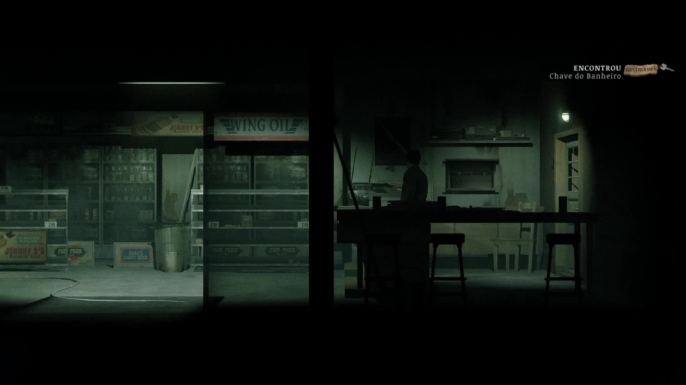
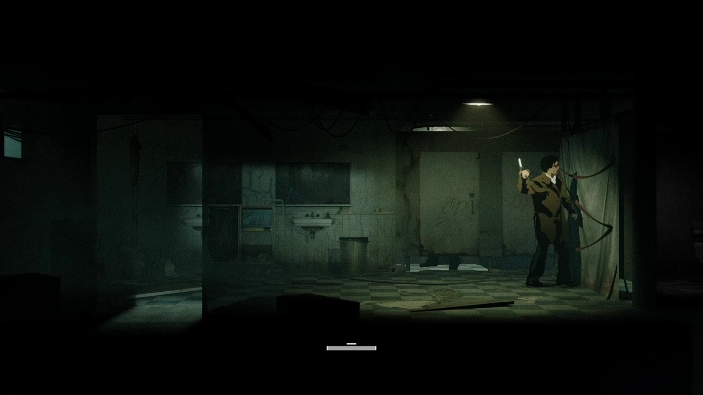
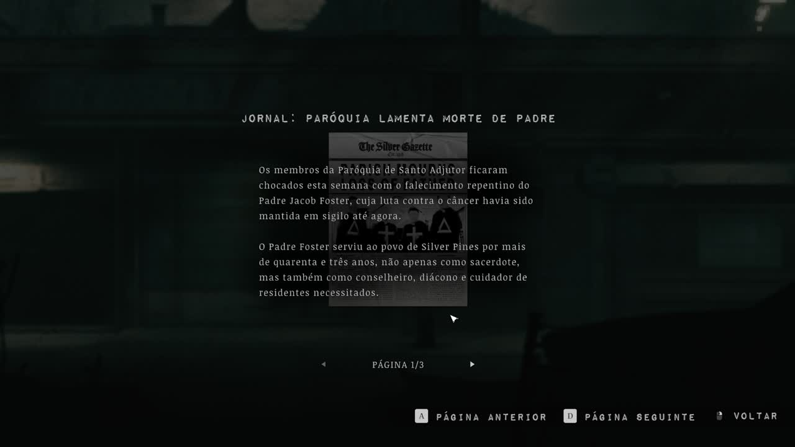
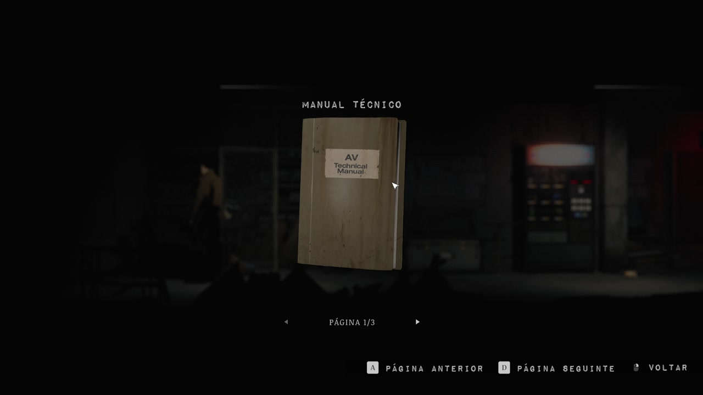

Spoiler warning. Here you'll find the route through the campaign, the solutions to the puzzles that block your way and the routes to Leave, Rest or Live. Our gameplay videos are in Brazilian Portuguese, so on-screen text in the screenshots is in Portuguese. All images come from Bora de Play's gameplay.
How to use this walkthrough
First playthrough. Follow the numbered chapters. In each area, use the route table to find the exit and check the result before moving on. The first time you reach a phone, try saving and confirm the save before leaving. When you open a shortcut, check on the map which areas it connects. Store the ending items you plan to use in the storage boxes.
Already playing? Find the spot where you are stuck in the table and jump straight to the solution. When you need to go back for an item, the chapter tells you.
| Where I am stuck | Go to |
|---|---|
| Freezer or motel gate | Reception key |
| Palm tree door or ferry access | Doorknob and ferry |
| Burning car blocking the station | Detour through the tunnel |
| Sheriff's station code or the gas station fanny pack | Gas station and Riverside tunnel |
| Sheriff's safe or code 3100 | Safe, evidence and projector |
| Intercom, tokens or apartment 4B | Union Apartments |
| Funeral home, coffin or church cubes | Church Hill |
| Statue masks | Where to find the three masks |
| Sewer valves, bells or fuses | Sewers and mountain |
| Cables, tapes or lenses | Thelend panels |
| Symbol phone or tree | Phone and stakes |
| Eddie's choice, rings or mementos | The three endings |
Campaign route
- Start and motel
- Downtown and station
- Riverside and the sheriff's station
- Union Apartments
- Church Hill
- Town Hall and Loomis Park
- Sewers and mountain
- Thelend and the red door
- The three endings
1. Start and motel
| Where I start | Landmark | What to do | How I know it worked |
|---|---|---|---|
| Miner Diner table | Kitchen with a radio | Take the key from the hook and use it on the diner door. | The exit to the phone and the car opens. |
| Front of the motel | Pharmacy and underpass gate | Get the key in the staff area, go back to the lower street and open the gate. | You reach the fence with a gap to crawl through. |
| Freezer | Back room, past the meat | Enter 2311 and go through to get the key. | The Reception Key appears in your inventory. |
| Reception | Fabric on the right and desk | Cut the fabric and open the compartment with the key. | The register shows Eddie's record and the number for the keypad. |
| Gift shop basement | Fuse box near the hall | Install the fuse and power the hall. Complete the shooting gallery. | The prize is the pool key. |
| Pool locker room | Hanging coat | Take the card to open the Grizzly suite. | The suite door gives you the pool net. |
| Pool | Ladder near room 1 and the pipe | Fish out the object and combine it with the cleaning solution. | Your inventory shows the doorknob for the palm tree door. |
| Bar scene | Cable car flyer | Take the ferry key. Leave the motel and go through the tunnel. | The key opens the office where you call the ferry. |
Goal: find Eddie's guest number and reach the ferry.
At the Miner Diner, take the car key from the table, the diner key from the kitchen and, if you plan to go for Rest, the locked ring box in the bathroom. The emergency note gives the frequency 89.0. Go outside, answer the phone and open the trunk to collect your investigation gear. Take the map from the notice board and head to the Crimson Bear Motel.
Before leaving the Miner Diner
- Table and kitchen. The car key opens the trunk. To open the diner door, take the other key from the hook above the kitchen radio.
- Bathroom. The ring box takes up space, but it can stay in storage until you gather the stars. Take a photo of the frequency note to check later.
- Outside. The board with the map is past the car. Go up the road next to it and through the tunnel until you see the motel sign. The office is to the left of the gate.
The reception key
- Read the note in the office next to the gate. It points to Rodney's grocery store.
- Get the underpass key in the pharmacy staff area. Open the underpass, crawl through the gap in the fence and continue to the grocery store.
- In the store, the note tells you to put 23 together with the day of the month. The calendar shows 11. Enter 2311 on the freezer, go through to the back room and take the reception key. Be ready to leave when the creature shows up.
- On the way back, pick up the box cutter and use it on the fabric blocking the way. In the motel office, cut the fabric on the right to reach the desk. Use the key, read Eddie Velvet's record and note his guest number. Enter that number on the gate.


In our gameplay, the register showed 38116. Check the number on the record in your own playthrough: it may be different.

If the way back from the grocery store seems blocked: look for the white fabric in the tunnel and cut it with the box cutter. Enter the dark passage before the next door, reach the ledge and climb the ladder. The other fabric takes you back to the underpass route. At reception, the fabric on the right leads to the back. The key opens the register compartment in that room.
The palm tree door
Get the fuse in the gift shop basement and install it in the motel's fuse box. Power the game room, use the pellets at the shooting gallery and knock down the targets to win the pool area key. The suite card is in the coat in the locker room.
Go through room 5 and the vent to find the cleaning solution. In the Grizzly suite, collect the revolver, half of the Polaroid and the pool net. Use the net on the pool pipe and clean the recovered object to get the doorknob. Fit it on the palm tree door in the basement. Follow the bar scene and look for the ferry office key next to the cable car flyer. Optionally, call 58883 and use 6671 on the store's gun cabinet.
If you are missing the doorknob: go down the pool ladder near room 1. The object is inside the pipe, out of reach. After driving the creature away, use the net and combine the dirty object with the cleaning solution in your inventory. The palm tree door is in the store basement, behind the fabric. On the way out, face the creature in the tunnel. When it drops from the ceiling, dodge and attack in the opening. Open the office with the key, activate the panel and board. There is a fanny pack behind the fabric to the left of the office.
Route references. Crimson Bear Motel — Into Indie Games, GameSpew.
↑ Contents2. Downtown and station
| Where I start | Landmark | What to do | How I know it worked |
|---|---|---|---|
| Downtown pier | Bus stop board | Take the map and head to the cinema street. | The downtown map becomes available. |
| Burning car | Gate below the stairs | Climb down the ladder, jump to the opposite bank and go through the tunnel. | You come back to the street on the other side of the blockage. |
| Tunnel exit | Stairs to Silver Road and phone | Go up to the station, fit the sign and take the key from hook A. | The Riverside Bridge Key goes into your inventory. |
Goal: reach the cable car and get the Riverside bridge key.
Downtown, take the map near the bus stop. From the cinema street, head to the stairs leading to the road blocked by the burning car. Go back down the stairs, through the nearby gate and down the ladder. Jump to the opposite bank and go through the tunnel, crouching near the creatures. On the way out, take the stairs on the other side and use the phone as a landmark for the station entrance.
Landmarks for the detour. The burning car marks the direct route that doesn't work. The ladder past the gate leads to the spot where you can jump over the water. In the tunnel, look for the exit to the street before going all the way to the end. On the next street, the stairs to Silver Road go up toward the station phone. Take the piece of the sign from the bench on the lower floor. Fit it above the bell rack and take the Riverside bridge key from hook A. Go back to the ticket office, examine the notice and talk to the attendant to mark the objectives on the map. C and G are already on the rack. You need to bring A, B, D, E and F.
Optional. The red and yellow birds are at the clinic and the cinema. The silver one is at the top of the padlocked ladder near the digger's trailer. Shoot the padlock, climb up and take all three to the cage at the Quiet Hour Café.
Route reference. Downtown and station — Into Indie Games.
↑ Contents3. Riverside and the sheriff's station
| Where I start | Landmark | What to do | How I know it worked |
|---|---|---|---|
| Riverside bridge | Junkyard workshop and coffee maker | Take the back gate key and cross to the gas station. | You reach the area where you can get the flashlight. |
| Wing Oil gas station | Dark tunnel on the right and indoor radio | Light up the passage and tune the radio to 86.6. | The message gives 1715 for the station door. |
| Sheriff's office | Dial safe | Turn right 15, left 7, right 3, left 10. | You get the evidence room key. |
| Evidence room | Cage opened with the safe key | Take the crowbar and use it on the badge in the morgue. | Badge 0013 gives the clue for the reversed code. |
| North wing | Projector and license plate outside | Overlay the plate on the text, open interrogation with 3100 and play the tape. | The officer sequence starts the fight and the way to bell A. |
Goal: get the flashlight, the crowbar and bell A.
Open the bridge with the station key. At the junkyard, take the gate key in the workshop, near the coffee maker. Open the back exit and cross to the Wing Oil gas station. Pick up the flashlight on the other side of the station. On the radio in the dark tunnel, tune to 86.6 and listen to the message. The sheriff's station door opens with 1715.
Optional fanny pack. Take the key from the gas station store counter. Go out to the left to the bathroom door. Unlock it, cut the fabric on the right with the box cutter and collect the fanny pack from the toilet.




Safe, evidence and projector
The sheriff's safe, the evidence room and the interrogation keypad are three steps of the same route. Solve the safe first to get the tool that frees the badge clue. In the station, look for the basement key in the sheriff's office and the north wing key in the underground storage. Examine the safe manual and the book that gives the sequence of themes.
| Theme | Number | Turn |
|---|---|---|
| Bones | 15 | Right |
| Spirits | 7 | Left |
| Body | 3 | Right |
| Evil | 10 | Left |
Open the safe and use the key in the evidence room to take the crowbar. In the morgue, pry off badge 0013 with the tool. Take the license plate from outside the north wing and put it in the projector. The message tells you to reverse the badge: 3100. Use that code on the interrogation room, talk to the officer and play the tape on the device in the room. Face the officer and collect bell A on the path that opens after the fight. The armory rifle is optional and its key is on the bed in cell B.

Route reference. Riverside and the sheriff's station — Into Indie Games.
↑ Contents4. Union Apartments
| Where I start | Landmark | What to do | How I know it worked |
|---|---|---|---|
| Cinema | Dark auditorium and gap between the seats | Use the flashlight, cross the auditorium and leave through the door on the other side. | The Union street becomes accessible. |
| Union entrance | Key box and service room outside | Use the key, turn off the intercom and go back to call 4B. | The door to the apartments unlocks. |
| Apartment corridor | Laundry room in the basement | Take the four tokens to the machine. | The third-floor key comes out of the machine. |
| Superintendent's room | Apartment panel | Enter 1C, 3A, 2A, 3C and take the button to the elevator. | The fourth floor becomes selectable. |
| Rooftop | Key next to the diary page | Open 4B, use the bathtub and finish the fight and the flooded scene. | You leave with bell D and can equip the swimming memento. |
Goal: get into 4B, take bell D and open the crossing to Church Hill.
Use the flashlight in the dark area of the cinema and cross to the apartments side. Take the service room key at the Union entrance, go down to the room and turn off the intercom broadcast. Go back to the entrance panel and call 4B.
Gather four laundry tokens: one in the superintendent's room, one on the second floor, one in the basement storage and another in the laundry room itself. Put them all in the machine and take the third-floor key. Use the crowbar on the bathroom mirror in 3C to reach 3B and keep exploring. The superintendent's clippings match apartments 1C → 3A → 2A → 3C. Work the lock in that order, take the fourth-floor button and install it in the elevator.
Getting around the apartments. After breaking the mirror in 3C, cross into 3B and come out in the third-floor corridor. Head to 3A and look for the birthday card. From the broken balcony past 3A, drop down to reach 2A and the typewriter page. In 1C, the gallery flyer identifies the artist. These clues link the residents in the clippings to the four doors. Go up to the rooftop to find the 4B key. Save, enter the apartment and interact with the bathtub. In the fight, keep moving when the spikes come out of the floor and attack when the creature appears. Afterwards, take the Sea Polished Glass Shard in the flooded scene. Equip it to swim farther. Take the injured bird to the hole marked Hunger and collect bell D.
Optional. Combine alcohol from the still in 2B with the dry solvent from 2A. Clean the wall in 1C to reveal 1525, which opens the storage room with gasoline in the basement.
Route reference. Union Apartments — Into Indie Games.
↑ Contents5. Church Hill
| Where I start | Landmark | What to do | How I know it worked |
|---|---|---|---|
| Boat workshop | Water to the west and ladder by the church | Equip the swimming memento, swim across and lower the bridge. | The way back by land is open. |
| Parish hall | Key on the table to the right | Open the flower shop and get the family area key. | The funeral home's upper door now opens. |
| Funeral home | Mirror with flower names and lower keypad | Enter 752, send coffin 2 to the incinerator and collect the cube. | The cube goes into your inventory once the fire is out. |
| Cemetery street | Sledgehammer, old houses and well | Break the cracked wall to get the crank and use it on the well. | The bucket brings up the third cube. |
| Church side gate | Four symbol slots | Fill in triangle, cross, cross, triangle and go up the tower. | After the sequence in the church, the door on the left leads to bell B. |
Goal: get the sledgehammer, the crank and bell B.
With the swimming memento equipped, swim across the water west of the boat workshop, below the Silver Gazette. Climb the ladder by the church and activate the drawbridge panel to open the way back by land.
- Church. Collect the first cube. In the parish hall, take the flower shop key.
- Flower shop. Go past the counter and break the boards to get the key to the funeral home's family area. Note the prices: lily 7, rose 5, bluebell 2.
- Funeral home. The note on the mirror lists lily, rose and bluebell. Enter 752 at the coffin access. Identify coffin 2, Jacob Foster's. Use the carts and the elevator to take it to the cremation conveyor. Once the fire is out, collect the cube inside the incinerator. Also take the cemetery key.
- Cemetery. Pick up the sledgehammer on the upper street. Break the cracked wall in one of the old houses to get the crank. Use it on the cemetery well and collect the last cube.

Moving the coffin. Place the cart next to coffin 2 and move the coffin onto it. At the bottom of the elevator, transfer the coffin to the platform and press the button. Go up outside, use the upper cart to take the coffin to the conveyor and start the cremation. Wait for the fire to go out before going in. Fit the cubes into the gate and copy the memorial necklace, from left to right: triangle → cross → cross → triangle. Go up the tower, get through the confessional sequence and survive the waves of enemies inside the church. The door on the left leads to bell B.
Route reference. Church Hill — Into Indie Games.
↑ Contents6. Town Hall and Loomis Park
| Where I start | Landmark | What to do | How I know it worked |
|---|---|---|---|
| Loomis Park entrance | Boards on the gate | Use the crowbar and go into the town hall. | You reach the town hall lobby and stairs. |
| Town hall lobby | Phone room, basement and night school | Gather the tongs, the mold and the office key. Open the upstairs office. | The clay and the sewer key become available. |
| Bandstand and mixer | Park manhole and yellow mixer | Get the crying mask and prepare the mold with the mixed clay. | Your inventory shows the filled mold. |
| Town hall kiln | Tongs and meeting hall | Remove the deformed mask and win the fight. Place the three masks on the statues. | The middle statue's hand releases bell F. |
Goal: get the sewer key and bell F.
Open the way into Loomis Park with the crowbar. In the town hall, pick up the tongs in the phone room, the office key in the coat in the basement and the mold in the artist's room. The smiling mask is in the area reached through the night school corridor. Open the upstairs office and take the clay and the sewer key. If you are going for Rest, talk to the woman at the night school.
Finding the three masks
| Mask | Where to look | What to bring |
|---|---|---|
| Smiling | Room reached through the night school corridor | Access to the upper floor |
| Crying | Tunnel under the manhole near the bandstand | Sewer key |
| Deformed | Town hall kiln | Filled mold, mixed clay and tongs |
Open the manhole near the bandstand to get the crying mask. Use the clay in the mixer, combine the mix with the mold and put it in the kiln. Take out the deformed mask with the tongs and face the creature in the hall. On the statues, place the crying mask on the left, the deformed one in the center and the smiling one on the right. Take bell F.
Optional. Use the crank on the town hall clock, set it to 10:07 and pull the candlestick in the upper corridor to open the memento compartment. The operations cabinet uses 1893.
Route references. Loomis Park — Into Indie Games, Town Hall — GameSpew.
↑ Contents7. Sewers and mountain
| Where I start | Landmark | What to do | How I know it worked |
|---|---|---|---|
| Clinic | Manhole next to the building and pier panel | Take the gear. Install it with the crank and lower the three gears. | The water level drops and the pipe becomes reachable. |
| Sewer entrance | Raised pipe and worker at the end of the tunnel | Take the key, open the grate and switch on A. | The control room shows A active. |
| Control room | Corridor 1329 and cracked wall | Go to C, note 1467 on the diagram and use the code to reach B. | A, B and C light up after you turn the valves. |
| Pressure panel | Three wheels and main floodgate | Raise all three pressures and go through the opening. | The path opens the fight and bell E. |
| Lower station | Bell rack and sign | Hang the bells by letter and ring E, G, D, C, F, A, B. | The cable car reaches the platform. |
| Upper station | Bathroom, Trail sign and outdoor fuse box | Use 0441 at the exit and gather two 40 A fuses. | The fuse box powers the trail. |
Goal: get bell E and power the mountain's electrical grid.
Open the manhole near the clinic and take the heavy gear. At the pier floodgate panel, install the gear and the crank, lower the three gears and activate the mechanism. Enter the sewer system, climb the freed pipe and take the worker's key to open the grate.
Switch on control A near the grate. From the control room, explore the corridor behind the cracked wall to reach C. The pipe diagram gives 1467, the code for access to B. Save before activating it and face the monster. Go back to the control room, confirm the three green lights and turn the pressure controls all the way up. Go through the floodgate, follow the fight prompts and collect bell E.
Checklist before returning to the station
| Bell | Where to get it |
|---|---|
| A | After the fight with Roberts at the sheriff's station |
| B | Door on the left in the church after the waves |
| D | The 4B scene, after feeding the creature in the hole |
| E | Past the main sewer floodgate |
| F | Hand of the central statue in Loomis Park |
If the sewer panel still shows a light off, go back to the valve with that letter before touching the pressure. The bell sequence below is the order to ring them. To hang them, follow the letter on each hook.
At the station, hang the five bells on the matching hooks. Ring E → G → D → C → F → A → B and board. At the upper station, the password 0441 is on the bathroom wall. Follow the trail signs and gather two 40 A fuses: one next to the fallen antenna and another in the box in the dark building. Install both in the outdoor fuse box, turn the power on and go back through the tunnel to the gate that is now accessible. Follow the trail up to Thelend.
From the fuse box to Thelend
- From the outdoor fuse box, go back to the left and up the path marked Trail. Look for the entrance to the same tunnel you used to reach the building with the second fuse.
- Inside the tunnel, keep left to the gate. Open it, go through the passage and, in the next room, go right and up the stairs. If it is still closed, go back to the fuse box and check that both fuses are installed and the switch is on.
- At the upper exit, pick up the trail signs again. Near Thelend, cross the flooded stretch to the low culvert, crouch through and go down the ladder to lower the bridge. Climb back up and head to the station. The ringing phone is your arrival landmark.
Route reference. Sewers and Siah Kopa — Into Indie Games.
↑ Contents8. Thelend and the red door
| Where I start | Landmark | What to do | How I know it worked |
|---|---|---|---|
| Thelend entrance | Phone room and audio panel | Read the AUDIO section, gather the cables and connect the three outputs. | The recording gives the phrases that identify the tapes. |
| Editing room | Tape shelf and locked compartment | Read the death counts and enter 0002. | You get the back key. |
| Back exit | Outdoor yard, stairs and low window | Go around the building and climb in through the window. | The Stage 1 key is on the office desk. |
| Stage 1 | Projector and cyan, magenta and yellow lenses | Fit all three and raise the cyan one. | The set turns red and the way to the red door appears. |
| Red door area | Phone with a missing dial and symbols on the wall | Find the dial and dial the five symbols. | The second half of the key drops into the phone's compartment. |
| Tree | Grate, red room TV and high-voltage corridor | Find the three stakes and use them on the tree. | The third one starts the fight before the encounter with Eddie. |

Goal: open the red set and reach Eddie's choice.
Open the bridge shortcut and enter the building. Gather three cables: at the entrance panel, in the shelving area and in the editing room. Read the technical manual in the room with the phone. On the audio panel, connect OUT 2 → IN 6, OUT 4 → IN 5 and OUT 5 → IN 2. Match the audio phrases with the tape titles in the editing room. The death count gives 0002. Open the compartment and take the back key.

Use the key on the Exit door at the end of the storage corridor. Go down the outdoor stairs and follow the grate to the right. In the next area, take the passage at the back, go up the stairs and down through the passages on the other side until you see the low window on the right. Climb the ledge to the window. You should drop into the office with the key on the desk. Unlock the inner door to return to the lobby. Take the Stage 1 key. Get the cyan lens in the film room, the magenta one in the flooded basement and the yellow one at the top of the tower. The tower key is in the storage area.

Fit all three into the Stage 1 projector, raise the cyan one and keep magenta and yellow active. Face the Driver and go through the red door.
If the audio or projector won't work
| Panel | Check |
|---|---|
| Audio | Use the AUDIO section of the manual. Output and input numbers are different. |
| Tape box | Enter the leading zeros too. The combination has four digits: 0002. |
| Projector | Fit all three lenses. Leave magenta and yellow in the beam and move cyan out of the way. |
The phone and the stakes
- Take a photo of the five symbols on the wall. Take the rusty key and the half key from the hooks. Use the rusty key to open the grate. Past the catwalks, climb the ladder next to the posters to get the pliers.
- Go down the ladder in the gap to get the phone dial. Fit it on the phone and dial in the order shown on the wall: omega, inverted triangle, triangle over a cross, crossed-out circle, inverted triangle with a bar. Collect the other half and combine both to get the bloody key.
- Take one stake behind the bloody key's grate. For another, find the Love tape behind the breakable wall in the tunnel and play it on the TV in the red room. The third is on the high-voltage path, near the wrecked car. Use the pliers on the box's two wires to open that route.
- Use the three stakes on the tree. Save before the third one, which starts the fight. After winning, move on to Eddie's flooded area. Keep the save from before the conversation if you want to try other endings.


Route references. Thelend and endings — Into Indie Games, Puzzles and panels — Bonus Action.
↑ Contents9. The three endings
| Where I start | Landmark | What to do | How I know it worked |
|---|---|---|---|
| Phone before Eddie | Flooded area and dialogue choice | Save and choose to kill Eddie for Leave, or spare him to follow the other routes. | Leave takes you to the Miner Diner. Sparing him sends you back to West Road. |
| West Road after sparing Eddie | Ring in the water and slots on the Rabbit Hole stage | For Rest, gather Alice's ring and the ring from the five-star box. | Both rings on the stage start the final sequence. |
| West Road after sparing Eddie | The outskirts' shore and the burned-hands man's cabin | For Live, check you have all 25 mementos, talk to him and confirm the burning. | Confirming at the cabin starts the Live ending. |
Mind the button. The ending called Leave matches the choice to kill Eddie. The Leave option shown in the dialogue means walking away and sparing Eddie, which opens the Rest and Live routes.
Prepare the save for the choice
Save at the phone before talking to Eddie. If you are going for Rest, check the ring box and the stars. For Live, use the memento list linked at the end. Both routes start from the decision to spare Eddie.

Leave
Choose to kill Eddie. After the transition, answer the phone outside the Miner Diner and use the car to finish. This is the route shown in Bora de Play's gameplay.
Rest
Spare Eddie. Take Alice's ring in the flooded area of West Road. The other ring is in the ring box in the Miner Diner bathroom, which opens with five stars:
| Star | Where to look |
|---|---|
| Rabbit Hole | The bar table during the visit to the real place. |
| Motel room 3 | Restart the ferry with the 20 A fuse from the pier office. Use the sledgehammer to get into the lighthouse, climb up for the room key and open the safe with 6671. |
| Quiet Hour Café | Next to the injured man, after progressing through the Church Hill sequence. |
| Digger's hole | Take the shovel inside the trailer once it is accessible and dig at the bottom of the hole. |
| Woman in the yellow coat | Talk to her at the clinic and the night school. Find her on the bench near the Thelend entrance and continue the dialogue to collect the star. |
Combine the stars with the box, take out the ring and place both rings on the Rabbit Hole stage. Save before taking the path that opens. In the chase, push forward breaking the barriers, attack in the dead ends and dodge the debris until you finish the fight at the diner.
Live
Spare Eddie and gather the 25 mementos. Use the collection list during the campaign, as the route includes items from optional areas. Go back to the outskirts' shore, talk to the man with the burned hands and confirm burning the mementos at the cabin. The collection guide in the links below shows where the mementos are and helps you check what is missing.
References. Routes to the three endings — Gamer Social Club, All 25 memento locations — Gamer Social Club, Memento map — Gamer Guides.
↑ Back to top